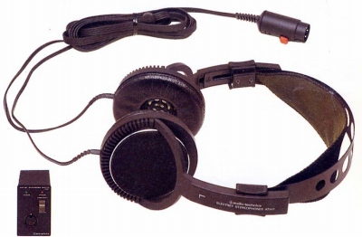
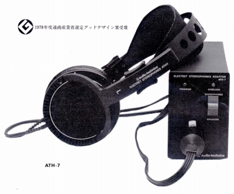

ATH-7


■価格 21,000円■型式 エレクトレットスタティック型オープンエアタイプ■振動板 5ミクロン■インピーダンス ■再生周波数帯域 10-25,000Hz■許容入力 500Vrms■感度 ■コード 2.5ｍＹ形特殊コード■重量 210g（コード含まず） アダプター880ｇ■発売 1978年■販売終了 1983年頃■備考 アダプター昇圧比 36dB アダプター外寸（�o） 90×60×180
テクニカのインデックスへ